석공예기능사 (2001-10-14 기출문제)
1과목: 공예디자인
1. 다음 중 정적인 구도는?
- 사선구도
- 역삼각형구도
- 삼각형구도
- 전광형구도
(정답률: 알수없음)

2. 귀족 공예의 특징에 관한 설명 중 올바른 것은?
- 미적가치, 감상목적을 기본으로 한다.
- 대중의 선택에 합치된 생산품의 표준형이다.
- 인간 생활의 조형 부문을 나타낸다.
- 미와 용의 결합체이다.
(정답률: 알수없음)
3. 구성에 있어서 주도성과 종속의 성립을 위한 방법으로 많이 사용되고 있는 것은?
- 강조, 억양, 집점
- 전이, 연속, 점층
- 대칭, 안정, 비대칭
- 적합, 대비, 대조
(정답률: 알수없음)
4. 북쪽 유목민의 기상이 넘쳐 흘러, 씩씩하고 호전적이며 간결한 것이 특징인 공예로 발달된 나라는?
- 낙랑
- 고구려
- 백제
- 신라
(정답률: 알수없음)
5. 세세션(Secession)운동에 대한 설명 중 틀린 것은?
- 합목적성의 구성
- 재료의 올바른 사용
- 개성적 창조의 자유
- 19세기 말 이태리에서 시작
(정답률: 알수없음)
6. 가법혼색과 감법혼색의 3원색 도표 중 "A"에 알맞는 색명은?
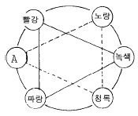
- Red
- Magenta
- Orange
- Cyan
(정답률: 알수없음)
7. 다음 중 배경과의 관계에서 시인성이 강한 요소는?
- 항상도
- 색온도
- 수축도
- 명시도
(정답률: 알수없음)
8. 다음 중 상품포장의 배색으로 적합하지 않는 것은?
- 소비자가 좋아하는 색을 선택한다.
- 색채의 경중감을 생각한다.
- 상품을 연상할 수 있는 색채를 배색한다.
- 큰 물건은 난색계의 색을 사용한다.
(정답률: 알수없음)
9. 제도용지의 세로와 가로의 비는?
- 1 : √3
- 1 : √2
- 1 : √4
- 1 : √1.5
(정답률: 알수없음)
10. 다음 기호 중 잘못 설명된 것은?
- 빔: 정사각형
- ø: 지름
- R : 반지름
- t : 길이
(정답률: 알수없음)
11. 도면을 그릴 때 치수의 표시가 가장 올바른 것은?
- 치수선 중앙 윗부분에
- 치수선 우측 옆부분에
- 치수선 좌측 밑부분에
- 치수선 밑에
(정답률: 알수없음)
12. 그림과 같이 주어진 각을 3등분 하기위해 꼭 필요한 도구는?
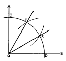
- 자, 각도기
- 자, 컴파스
- 자, 컴파스, 운형자
- 자, 삼각자, 비임컴파스
(정답률: 알수없음)
13. 다음 그림과 같은 투상법은?
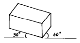
- 사투상도
- 등각 투상도
- 부등각 투상도
- 축측 투상도
(정답률: 알수없음)
14. 선에 대한 설명 중 잘못된 것은?
- 선은 점의 집합체이다.
- 선은 점이 이동하면서 이룬 자취이다.
- 선은 길이와 넓이와 두께를 가진다.
- 선은 위치와 방향을 가진다.
(정답률: 알수없음)
15. 다음 형태 중 유기적(organic) 형태는?
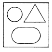
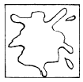
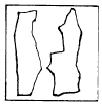
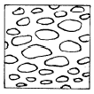
(정답률: 알수없음)
16. 물체의 반사율이 높을수록 무슨 색이 되는가?
- 검정색
- 노랑색
- 흰색
- 회색
(정답률: 알수없음)
17. 2개 이상의 색채 혼합으로 색의 명도가 높아지는 것은?
- 색광혼합
- 감색혼합
- 중간혼합
- 병치혼합
(정답률: 알수없음)
18. 무채색에서 얻을수 있는 대비효과는?
- 명도대비
- 채도대비
- 색상대비
- 보색대비
(정답률: 알수없음)
19. 어떤 색은 딱딱하고 굳은 느낌을 주고, 어떤 색은 연하고 부드러운 느낌을 주는 것은 색의 어떤 감정에서 오는 것인가?
- 온도감
- 중량감
- 흥분,침정감
- 색의 경연감
(정답률: 알수없음)
20. 다음 배색 중 색상 차이가 가장 적은 것은?
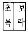
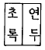
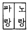
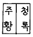
(정답률: 알수없음)
2과목: 석공예재료
21. 다음 삼각형ABC와 같은 면적의 사각형 그리기의 도형에서 MD의 길이는?
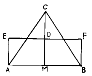
- MD = 1/2 MC
- MD = AM
- MD = 1/2 AC
- MD = ED
(정답률: 알수없음)
22. 그림과 같은 단면의 명칭은?
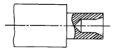
- 반단면
- 국부단면
- 회전단면
- 인출회전단면
(정답률: 알수없음)
23. 화성암을 성인에 따라 분류한 것과 관계 없는 것은?
- 심성암
- 반심성암
- 분출암
- 변성암
(정답률: 알수없음)
24. 다음 중 화강암에 대한 옳은 설명은?
- 300℃에서 변색되고 900℃에서 파괴된다.
- 400℃에서 변색되고 800℃에서 파괴된다.
- 550℃에서 변색되고 700℃에서 파괴된다.
- 600℃에서 변색되고 650℃에서 파괴된다.
(정답률: 알수없음)
25. 다음 중 석영(SiO2)양이 52-66% 정도인 화성암의 종류에 속하는 암석은?
- 현무암
- 섬록암
- 화강암
- 감람암
(정답률: 알수없음)
26. 다음 중 석재의 형상에 의한 분류에 속하는 것은?
- 점판암
- 사고석
- 대리석
- 화강암
(정답률: 알수없음)
27. 가장 풍화되기 쉬운 석재는?
- 석회암
- 현무암
- 응회암
- 화강암
(정답률: 알수없음)
28. 석재의 특성 중 공예품 재료로서의 최우선 조건은?
- 강도가 강하다.
- 내구성이 좋다.
- 내화성이 좋다.
- 색상이 미려하다.
(정답률: 알수없음)
29. 빗물이 석재조직에 변화를 주는 가장 큰 요인은?
- 물리적 영향
- 화학적 영향
- 풍화작용
- 팽창계수의 변화
(정답률: 알수없음)
30. 압력이나 하중을 많이 받는 구조물 재료로 적합한 것은?
- 부석
- 화강함
- 응회암
- 사암
(정답률: 알수없음)
31. 대리석(大理石)의 내화도(耐火度)는?
- 내화성(耐火性)이 약하다.
- 고온에서도 타지 않는다.
- 800℃이상에서 변색되여 부서진다.
- 900℃에서 녹아 액체가 된다.
(정답률: 알수없음)
32. 다음 석재와 석재의 수명 관계를 옳게 짝지운 것은?
- 사암 - 100년
- 규석 - 350년
- 화강암 - 200년
- 대리석 - 300년
(정답률: 알수없음)
33. 석재 마무리 연마에 가장 적합한 재료는?
- 샌드 페이퍼
- 숫돌
- 왁스
- 도드락 망치
(정답률: 알수없음)
34. 연마재로 사용되는 카아버런덤의 화학성분은?
- SiC
- Al2O3
- MgO
- CaO
(정답률: 알수없음)
35. 인조석의 주원료에 속하지 않는것은?
- 모래
- 시멘트
- 각종쇄석
- 수성페인트
(정답률: 알수없음)
36. 절삭속도 설명 중 맞는 것은?
- 분당 절삭면적
- 분당 절삭길이
- 시간당 절삭깊이
- 시간당 절삭길이
(정답률: 알수없음)
37. 대리석을 착색할 때 필요하지 않는 용제는?
- 메틸에틸케톤
- 메탄올
- 질산
- 아세톤
(정답률: 알수없음)
38. 화강암의 발색시 거의 발색되지 않는 조암광물은?
- 석영
- 장석
- 운모
- 휘석
(정답률: 알수없음)
39. 망치머리와 망치자루가 바르게 제작된 것은?
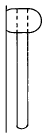
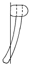
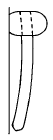
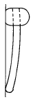
(정답률: 알수없음)
40. 다음 중 석재의 접착재료로 가장 적합한 것은?
- 아크릴계수지
- 에폭시
- 백시멘트
- 아세톤
(정답률: 알수없음)
3과목: 석공예
41. 건축 기둥양식에 있어서 도리아식을 한층 더 단순화한 양식과 시대가 올바른 것은?
- 이오니아식 - 희랍
- 이오니아식 - 이집트
- 다스캉식 - 그리이스
- 다스캉식 - 로마
(정답률: 알수없음)
42. 다음 그림과 같은 연꽃 무늬를 주로 사용한 시대는?
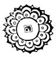
- 신라
- 백제
- 고구려
- 고려
(정답률: 알수없음)
43. 석재의 표면이나 측면에 생긴 미세한 균열을 확인하는 방법은?
- 불로 튀겨본다.
- 고운 정다듬을 해본다.
- 카보런덤 공구 #60으로 갈아본다.
- 물을 뿌려본다.
(정답률: 알수없음)
44. 정(鋌)의 가장 올바른 선택은?
- 석재에 따라 끝부분의 강도를 달리해야 한다.
- 석재에 따라 정의 무게가 달라야 한다.
- 석재에 따라 정의 길이가 달라야 한다.
- 석재에 따라 정의 재료가 달라야 한다.
(정답률: 알수없음)
45. 원석을 평면으로 다듬을 때 주로 사용되는 석공예수공구는?
- 양날망치
- 큰 망치
- 메
- 도두락망치
(정답률: 알수없음)
46. 정밀한 조각이나 상감(象嵌)을 하기 위한 홈을 팔때 사용하는 전동공구는?
- 선반(旋盤)
- 드릴(drill)
- 바이트(bite)
- 에어툴(air tool)
(정답률: 알수없음)
47. 다음 그림과 같은 공구의 우리말 명칭은?
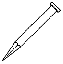
- 까뀌
- 정
- 다닥귀
- 메
(정답률: 알수없음)
48. 다이아몬드(Diamond) 톱으로 절삭할 때 주의할 사항 중 틀린 것은?
- 톱날이 회전축에 견고히 고정되어 있는가 확인한다.
- 톱날의 회전속도와 대차의 이송 속도는 반비례 해야한다.
- 원석의 고정 상태가 견고한가 확인한다.
- 냉각수의 공급량은 충분한가 확인한다.
(정답률: 알수없음)
49. 판재의 표면을 화염 가공할 때 유의할 사항 중 관계가 적은 것은?
- 판재의 흐름속도
- 불꽃의 세기
- 판재의 두께
- 불꽃과 판재의 각도
(정답률: 알수없음)
50. 연삭기에 대한 정의가 잘못된 것은?
- 연삭용 숫돌을 동력 회전체에 부착한 공구로, 고속 회전에 의한 작업 공구이다.
- 용도는 연마 또는 절삭을 위한 것이다.
- 숫돌의 직경은 5cm 이상이다.
- 직경의 크기는 제한이 없는 것이 특징이다.
(정답률: 알수없음)
51. 석조각이 끝난 후 깨끗하게 마무리 하려고 할 때 가장 적당한 작업은?
- 소금물로 닦는다.
- 염산으로 닦는다.
- 식물성 기름으로 닦는다.
- 수도물로 닦는다.
(정답률: 알수없음)
52. 석재를 잘 보존하려면 다음 중 어떠한 벙법이 가장 좋은가?
- 투명 래커칠을 하여 둔다.
- 표면에 발수제를 칠하여 둔다.
- 마대를 덮어둔다.
- 종이를 붙여둔다.
(정답률: 알수없음)
53. 다이아몬드 원형톱날을 사용하여 화강암 원석을 절단할 때 작업전 확인할 사항 중 관계가 가장 먼것은?
- 톱날과 원석간 거리 유지상태
- 냉각수의 공급상태
- 전원차단 장치의 결함여부
- 원석의 수평 및 수직 유지상태
(정답률: 알수없음)
54. 다음 안전보호구 중 위생보호구는?
- 장갑
- 방진마스크
- 안전화
- 안전모
(정답률: 알수없음)
55. 다음 안전관리의 방법에 관한 설명 중 가장 올바른 것은?
- 정리, 정돈보다 안전도 검사가 우선이다.
- 정리, 정돈보다 안전작업의 순서만 익히면 된다.
- 정리, 정돈보다 안전교육만 받으면 된다.
- 기계나 공구의 계획적인 정리, 정돈이 필요하다.
(정답률: 알수없음)
56. 작업장에서 통행의 우선권 순서가 맞는 것은?
- 부재 운반차 - 빈차 - 보행자 - 기중기
- 부재 운반차 - 기중기 - 빈차 - 보행자
- 기중기 - 부재 운반차 - 빈차 - 보행자
- 기중기 - 빈차 - 부재 운반차 - 보행자
(정답률: 알수없음)
57. 다음 중 석공예품 제작원가 요소에 해당되지 않는 것은?
- 임금
- 원석대
- 공구대
- 채석비
(정답률: 알수없음)
58. 화강석 1 입방미터((m3)의 무게치로 가장 근사한 것은?
- 2.6t
- 3.6t
- 4.6t
- 5.6t
(정답률: 알수없음)
59. 채석용 운반장비가 아닌 것은?
- 크레인
- 지게차
- 그레이더
- 트럭
(정답률: 알수없음)
60. 쐐기를 이용한 할석순서 중 제일 먼저 할석할 곳은?
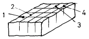
- (1)
- (2)
- (3)
- (4)
(정답률: 알수없음)